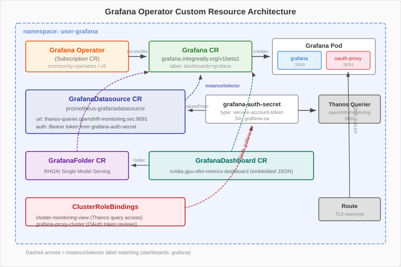

Grafana on OpenShift
OpenShift includes built-in monitoring dashboards in the web console, but they are limited to single-metric views without the ability to create custom, multi-panel dashboards. For operational dashboards that combine GPU health, inference latency, and queue depth into a single view, you need Grafana.
This page explains how the community Grafana Operator works on OpenShift, why ServiceAccount RBAC is necessary, and how dashboard-as-code CRs replace manual dashboard creation.

Components
The Grafana deployment on OpenShift involves four components that work together:
Grafana Operator
The Grafana Operator is a community Kubernetes operator that watches for Grafana custom resources and manages the lifecycle of Grafana instances. You install it from OperatorHub.
When the operator detects a Grafana CR, it creates:
-
A Deployment running the Grafana server pod
-
A Service exposing port 3000
-
A Route providing external HTTPS access through the OpenShift router
The operator also watches for three additional CR types:
| Custom Resource | Purpose |
|---|---|
|
Configures where Grafana queries metrics from (Thanos Querier in our case) |
|
Defines a complete dashboard as a JSON model embedded in a CR |
|
Organizes dashboards into folders within the Grafana UI |
When you create, update, or delete any of these CRs, the operator reconciles the corresponding configuration inside the Grafana instance automatically.
Grafana Instance
The Grafana CR defines the Grafana server itself.
In the Install Grafana exercise, you will create a Grafana instance in the llm-monitoring namespace with a minimal configuration that sets the admin credentials and enables the route.
GrafanaDatasource
The datasource tells Grafana where to find metrics.
In the OpenShift monitoring stack, all metrics (platform and user workload) are queryable through Thanos Querier, which runs at https://thanos-querier.openshift-monitoring.svc.cluster.local:9091.
The datasource configuration includes:
-
The Thanos Querier URL
-
A bearer token for authentication (from the ServiceAccount)
-
TLS settings (using the OpenShift service CA)
GrafanaDashboard
Each GrafanaDashboard CR contains a complete dashboard definition as an embedded JSON model.
When the operator processes this CR, it creates (or updates) the corresponding dashboard inside the Grafana instance.
You will deploy three of these in the Deploy Dashboards exercise.
Why a ServiceAccount with RBAC Is Required
Unlike a standalone Grafana that connects to an open Prometheus endpoint, Grafana on OpenShift must authenticate to query metrics. The OpenShift monitoring stack enforces authentication and authorization on all metric queries through Thanos Querier.
The authentication chain works as follows:
-
You create a ServiceAccount named
grafana-sain thellm-monitoringnamespace -
You create a Secret of type
kubernetes.io/service-account-tokenbound to that ServiceAccount, which generates a bearer token -
You create a ClusterRoleBinding that grants the
cluster-monitoring-viewClusterRole tografana-sa -
The GrafanaDatasource references this bearer token in its configuration
The cluster-monitoring-view role grants read-only access to all metrics in the cluster — both platform metrics (from openshift-monitoring) and user workload metrics (from openshift-user-workload-monitoring).
This single role gives Grafana access to container metrics, GPU metrics from DCGM Exporter, and vLLM inference metrics.
Do not use the cluster-admin role for Grafana. The cluster-monitoring-view role provides exactly the access Grafana needs — read-only metrics access — without granting permissions to modify cluster resources.
|
Dashboard-as-Code
There are two ways to create Grafana dashboards: manually through the UI, or declaratively as GrafanaDashboard custom resources. This course uses the declarative approach exclusively.
| Capability | Manual (UI) | Dashboard-as-Code (CR) |
|---|---|---|
Reproducibility |
Must recreate by hand on each cluster |
|
Version control |
Changes not tracked |
Dashboard JSON stored in Git alongside other manifests |
Multi-cluster |
Export JSON, import on each cluster manually |
Same CR applied to every cluster via GitOps |
Review process |
No review — changes are immediate |
Changes go through pull requests and code review |
Disaster recovery |
Dashboard lost if Grafana PVC is deleted |
Re-apply the CR to restore the dashboard instantly |
Drift detection |
No way to know if someone modified the dashboard |
Operator reconciles the CR, reverting manual edits |
| The Grafana Operator continuously reconciles GrafanaDashboard CRs. If someone modifies a dashboard through the Grafana UI, the operator will revert the changes on the next reconciliation cycle. This is a feature, not a bug — it ensures your dashboards in production match what is in Git. |
Reading a Dashboard JSON Model
Each GrafanaDashboard CR contains a json field with the full dashboard definition.
Understanding the structure of this JSON helps you customize dashboards and troubleshoot panels that do not display data.
Top-Level Fields
| Field | Purpose |
|---|---|
|
The dashboard name displayed in the Grafana UI |
|
A unique identifier used in URLs and cross-references between dashboards |
|
Defines dropdown variables (such as a namespace or pod selector) that users can change to filter all panels at once |
|
Array of panel definitions — each panel is one visualization on the dashboard |
|
Default time range when the dashboard is opened (e.g., last 1 hour) |
|
Auto-refresh interval (e.g., every 30 seconds) |
Panel Structure
Each entry in the panels array defines a single visualization:
{
"title": "GPU Utilization",
"type": "timeseries",
"gridPos": { "h": 8, "w": 12, "x": 0, "y": 0 },
"targets": [
{
"expr": "DCGM_FI_DEV_GPU_UTIL{namespace=\"nvidia-gpu-operator\"}",
"legendFormat": "GPU {{gpu}} on {{instance}}"
}
],
"fieldConfig": {
"defaults": {
"thresholds": {
"steps": [
{ "color": "green", "value": null },
{ "color": "yellow", "value": 80 },
{ "color": "red", "value": 95 }
]
},
"unit": "percent"
}
}
}The key fields within each panel:
| Field | Purpose |
|---|---|
|
The PromQL query that provides data for this panel. This is where the three patterns from PromQL Fundamentals appear. |
|
Template for the legend label, using double-brace syntax (e.g., |
|
Position and size on the dashboard grid. |
|
Color thresholds that change the visualization color based on the current value. In the example above, the panel is green below 80%, yellow from 80-95%, and red above 95%. |
|
The display unit (e.g., |
|
The visualization type: |
The thresholds in your dashboard panels should match the thresholds in your alerting rules. If your PrometheusRule fires when GPU utilization exceeds 95% for 10 minutes, set the red threshold in the dashboard panel at 95% so the visual warning and the alert are synchronized.
|